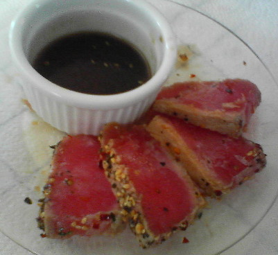

<Template name="home">
  <div class="wrapper">
    <h1>
      
      Mettez de la sauce dans vos mots de passe</h1>
    <p>Un bon mot de passe, c'est comme une bonne sauce, il faut le tester pour le réussir.</p>
    <p>Voici quelques techniques pour créer un mot de passe simple à retenir et pourtant personnalisé par site.</p>
    
    <a href="#page-password">C'est parti</a>
  </div>
</Template>